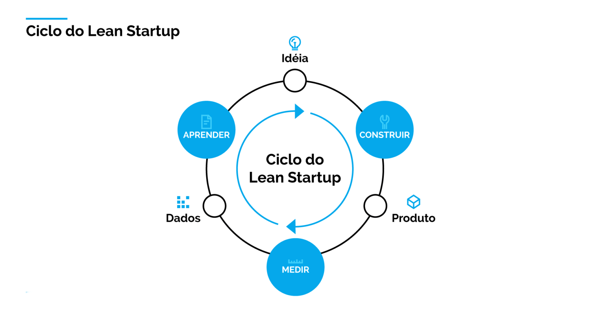
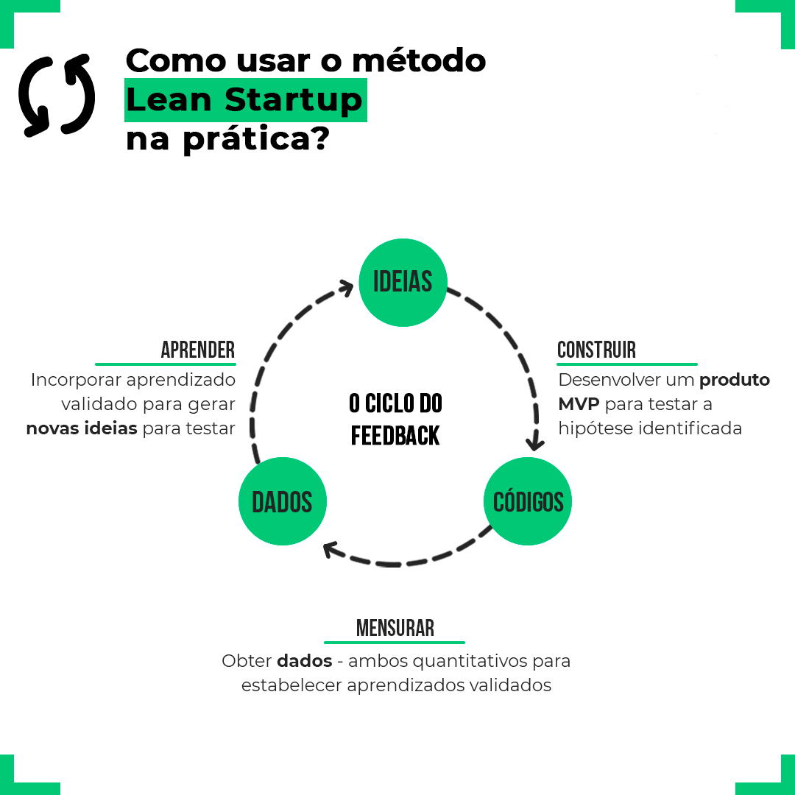
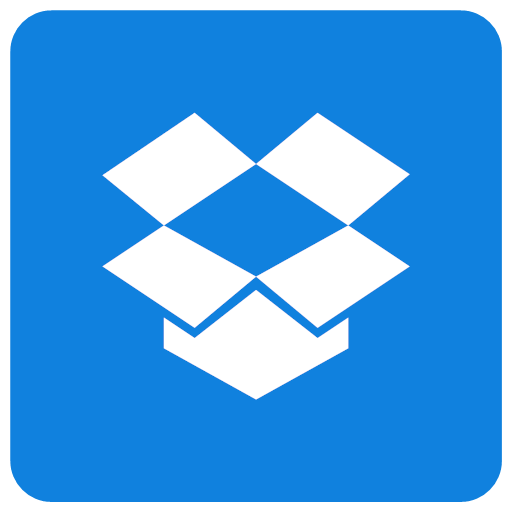
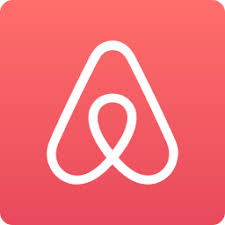

Lean Startup: O Guia Completo para Transformar Ideias em Negócios Sustentáveis
Lean Startup é um método bem diferente dos demais. Sua característica principal é começar a trabalhar
com a ideia sem estruturar a fórmula e sem pesquisar profundamente sobre o assunto inicialmente. O
método impõe um ciclo que envolve a ideia, construção do produto, medição dos resultados, coleta de
dados e aprendizado. A partir desses aprendizados, retorna-se à ideia inicial para refiná-la e
iterar novamente.

Este processo permite que startups testem suas hipóteses de forma rápida e eficiente, minimizando
riscos e adaptando-se rapidamente às necessidades do mercado. A ênfase está na experimentação
contínua, na validação de suposições e na capacidade de pivotar, ou seja, mudar de direção com base
nos dados coletados durante o processo.
O ciclo Build-Measure-Learn é o coração do método. Ele consiste em desenvolver rapidamente um Produto Mínimo Viável (MVP), testá-lo com clientes reais, analisar o desempenho com base em dados coletados e aprender se o produto precisa ser ajustado ou pivotado.
2. Produto Mínimo Viável (MVP)
O MVP é a versão mais simples de um produto que ainda consegue atender à necessidade principal do cliente. Ele serve para validar hipóteses antes de um grande investimento e ajuda empresas a aprenderem com o comportamento real de seus usuários.
3. Métricas Acionáveis
Em vez de focar em “métricas de vaidade” (como número de downloads ou visualizações), a Lean Startup incentiva o uso de métricas acionáveis. Essas métricas realmente medem o progresso, como a taxa de retenção, o CAC (custo de aquisição do cliente) ou o LTV (tempo de valor do cliente).
4. Pivotar ou Perseverar
Com base nos aprendizados obtidos após cada ciclo de feedback, uma decisão é tomada:
Pivotar: Mudar a estratégia de produto ou modelo de negócios.
Perseverar: Continuar seguindo o mesmo caminho, ajustando pequenos detalhes.
Como Aplicar a Lean Startup em seu Negócio

Agora que você conhece os conceitos de Lean Startup, aqui está um passo a passo para começar a aplicá-la:
1. Crie um Modelo de Negócio Claro
Use o Business Model Canvas para documentar a lógica do seu negócio. Descreva quem é seu cliente, qual valor você oferece, como você gerará receita e outros pilares importantes.
2. Desenvolva o MVP (Produto Mínimo Viável)
O MVP deve ser funcional o suficiente para demonstrar o produto ao mercado e antes de investir em funcionalidades sofisticadas. Pode ser:
Um protótipo básico.
Um teste piloto com poucos clientes.
Até mesmo um vídeo ou página de vendas.
3. Teste Suas Hipóteses
Saia ao mercado o quanto antes e acompanhe as reações ao seu MVP. Use para isso:
Crie um plano rápido para testar suas hipóteses sobre o que funciona para o cliente. Meça os dados usando ferramentas analíticas (por exemplo, Google Analytics). Aprenda com os resultados e faça ajustes no MVP.
Exemplos de Sucesso com Lean Startup
1. Dropbox 
Antes de investir no desenvolvimento completo do produto, o Dropbox criou um vídeo simples demonstrando como seria sua solução. O feedback positivo ajudou a validar a ideia, gerando confiança para o lançamento oficial.
2. Airbnb 
Os fundadores do Airbnb começaram alugando apenas uma parte de suas próprias residências. Com o feedback obtido nesse estágio inicial, conseguiram ajustar sua plataforma e transformá-la em um negócio bilionário.
3. Instagram
Iniciou como uma rede social baseada na geolocalização chamada Burbn. Após o feedback dos usuários, os fundadores pivotaram e transformaram-no no app de compartilhamento de fotos que conhecemos hoje.